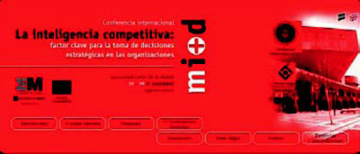

- La Cofa
Este es un weblog colectivo dedicado a la Vigilancia Tecnológica sobre el Futuro de Internet, la Banda Ancha y la Movilidad y otros temas de las Tecnologías de la Información y las Comunicaciones. Y siempre primando un enfoque más técnico que de negocio o cultural. Todo esto con criterio y ánimo flexible. El contenido, estructura y orientación no es fijo ni inamovible, al igual que estos principios, por lo que estaremos muy atentos al desarrollo y a la respuesta que tenga esta actividad para modificarla buscando la máxima utilidad de forma que sea una herramienta útil para sus lectores.

- collective intellect
- La Inteligencia Competitiva: factor clave para la toma de deciciones estratéticas en las organizaciones
http://www.madrimasd.org/Inteligencia-Competitiva/introduccion/default.asp
